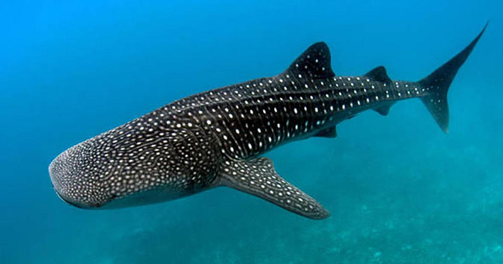
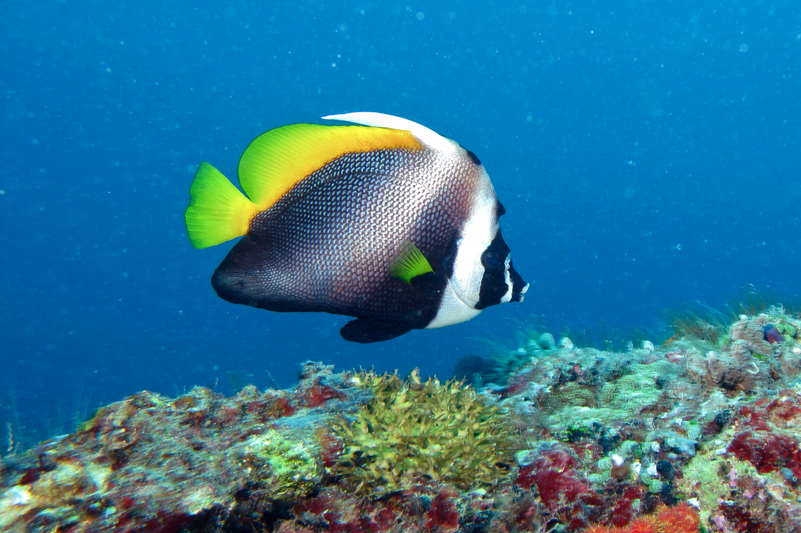
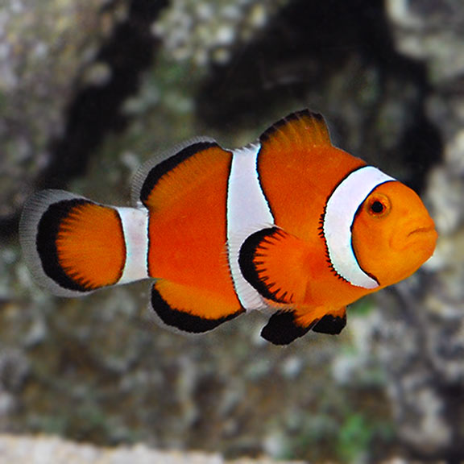
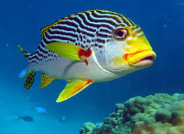
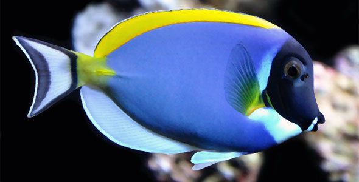
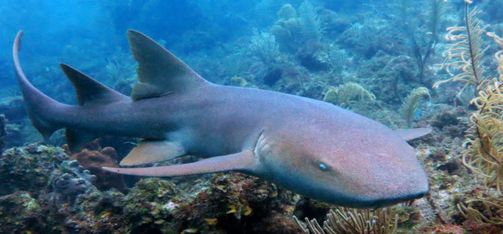
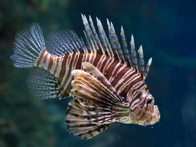
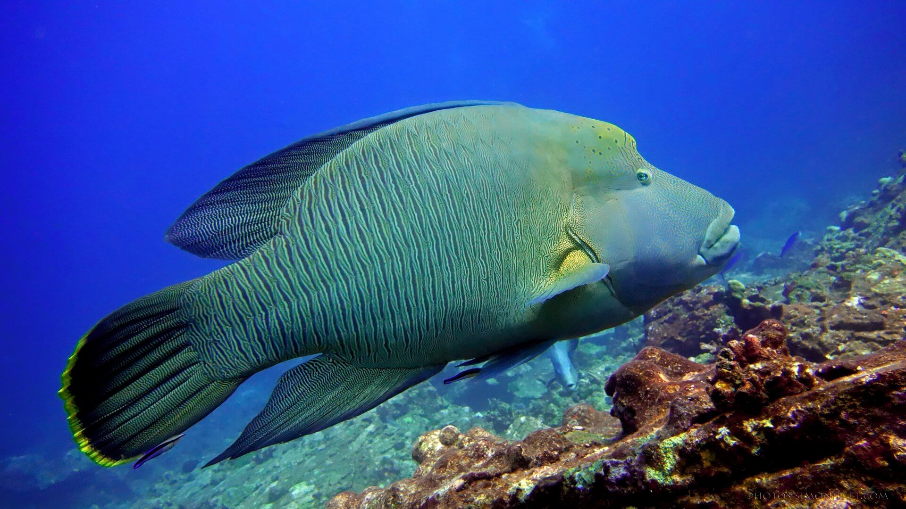
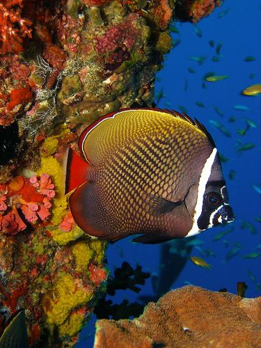

Mass: 19,000 kg (Adult) Encyclopedia of Life
Length: 5.5 – 10 m
Scientific name: Rhincodon typus
Order: Orectolobiformes
Higher classification: Rhincodon
Class: Chondrichthyes
Whale shark
The whale shark is a slow-moving, filter-feeding carpet shark and the largest known extant fish species.

Scientific name: Heniochus diphreutes
Higher classification: Heniochus
Conservation status: Least Concern (Population stable)
Found in: Red Sea
Rank: Species
Species: H. diphreutes
bannerfish
The schooling bannerfish, also known as the false moorish idol, is a marine ray-finned fish,
a butterflyfish from the family Chaetodontidae.

Scientific name: Amphiprioninae
Class: Actinopterygii
Kingdom: Animalia
Domain: Eukaryota
Phylum: Chordata
Higher classification: Pomacentridae
Anemonefish
Clownfish or anemonefish are fishes from the subfamily Amphiprioninae in the family Pomacentridae.

Scientific name: Plectorhinchus vittatus
Higher classification: Plectorhinchus
Phylum: Chordata
Order: Perch-like fishes
Rank: Species
Family: Haemulidae
Indian Ocean oriental sweetlips
The Indian Ocean oriental sweetlips, Plectorhinchus vittatus, is a species of grunt native to the Indian Ocean and the western
Pacific Ocean.

Lifespan: 8 – 20 years (In captivity)
Scientific name: Paracanthurus hepatus
Conservation status: Least Concern
Mass: 600 g (Adult)
Length: 25 – 31 cm (Adult)
Phylum: Chordata
Surgeonfish
Paracanthurus hepatus is a species of Indo-Pacific surgeonfish. A popular fish in marine aquaria, it is the only member of
the genus Paracanthurus.

Mass: 60 kg (Adult) Encyclopedia of Life
Scientific name: Ginglymostoma cirratum
Order: Carpet shark
Higher classification: Ginglymostoma
Rank: Species
Phylum: Chordata
Nurse Shark
Nurse sharks are slow-moving bottom-dwellers and are, for the most part, harmless to humans.
The nurse shark is an elasmobranch fish within the family Ginglymostomatidae.

Scientific name: Pterois
Higher classification: Pteroinae
Family: Scorpaenidae
Kingdom: Animalia
Class: Actinopterygii
Order: Scorpaeniformes
Lionfish
Pterois is a genus of venomous marine fish, commonly known as lionfish, native to the Indo-Pacific. Also called zebrafish,
firefish, turkeyfish, tastyfish or butterfly-cod.

Conservation status: Endangered (Population decreasing)
Scientific name: Cheilinus undulatus
Higher classification: Cheilinus
Kingdom: Animalia
Order: Labriformes
Phylum: Chordata
Napoleon Wrasse
The Napoleon wrasse is a large species of wrasse mainly found on coral reefs in the Indo-Pacific region.
It is also known as the Māori wrasse, Humphead wrasse, Napoleon fish, Napoleonfish.

Scientific name: Chaetodon collare
Conservation status: Least Concern (Population stable)
Higher classification: Chaetodon
Phylum: Chordata
Order: Perch-like fishes
Rank: Species
Collared Butterflyfish
The Collared butterflyfish or redtail butterflyfish, also known as the Pakistani butterflyfish, is a species of butterflyfish.
It usually swims at depths of between 3 and 15 m.